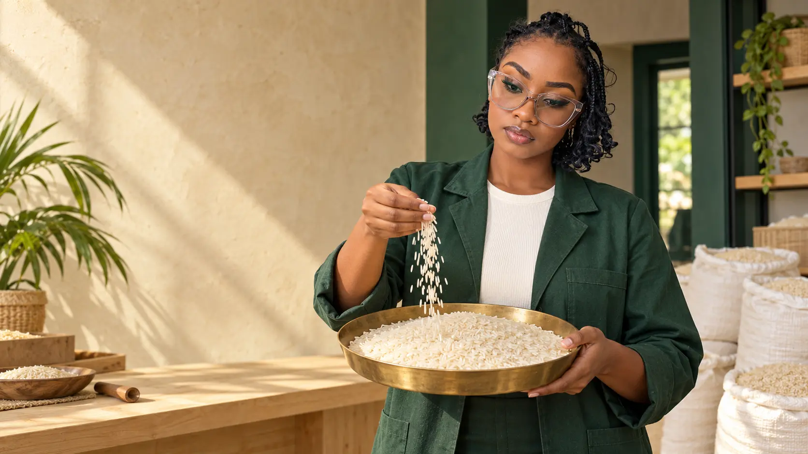
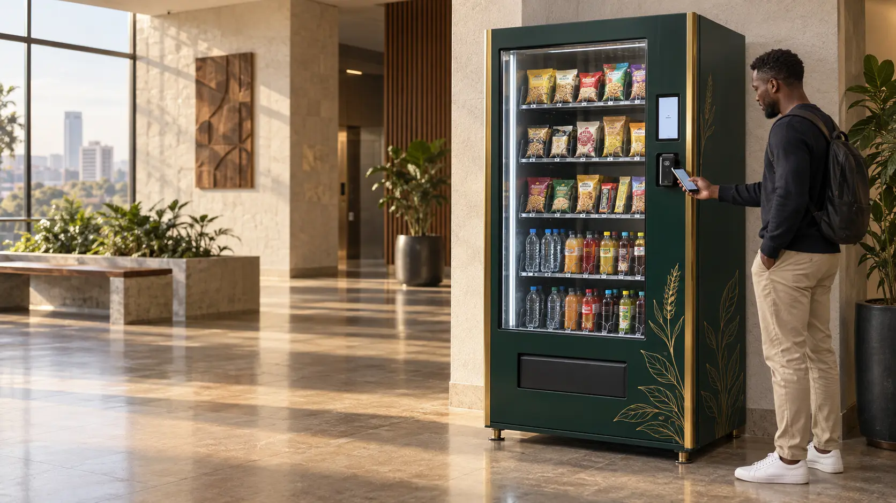

Ugandan grain sourcing & distribution
Grain that moves life forward.
From a trusted bowl of rice to the supply behind busy kitchens, Nafaka connects quality grain with the people and organisations building East Africa.
01More than a commodity
What grain becomes.
What begins as grain becomes energy for a school day, service in a busy kitchen, stock on a shop shelf—and opportunity for a grower.
Nafaka works along that chain: sourcing and distributing the staples that keep households, enterprises and institutions moving.
02The range at our heart
Rice, with room for choice.
Local and imported selections for different preferences and purchasing needs. Our team confirms current grades, origins, quantities and availability with every enquiry.
03Supply shaped around people
For the organisations that feed communities.
Retailers & commercial buyers
Grain enquiries shaped around the products, volume and timing your operation needs.
Schools & health facilities
Staple-food conversations for institutions responsible for feeding people every day.
Hospitality kitchens
Rice and other grains considered around service demands and recurring supply needs.
Processors & feed businesses
Maize, soya and selected animal-feed ingredients for millers, farmers and dealers.
Built from Kabale, looking outward
A local beginning.
A regional ambition.
Nafaka began with local and imported rice trading in Kabale. The business grew into Nafaka Foods Limited with a wider purpose: create stronger routes to market for farmers and move quality food toward the people who need it.

New venture Smart vending
Convenience, placed well.
Managed snacks and cold-drinks vending designed for the places people work, study, visit and wait.
Your next supply starts with a conversation
Tell us what needs to move.
Share the product, quantity, location and timing. We’ll help shape the next step.